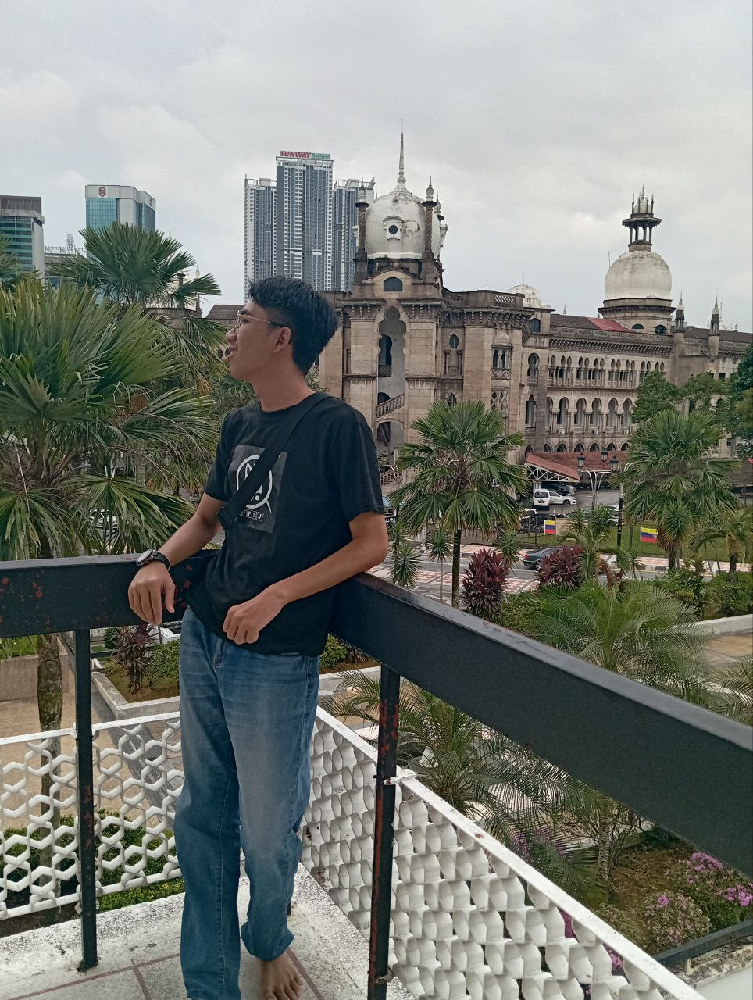
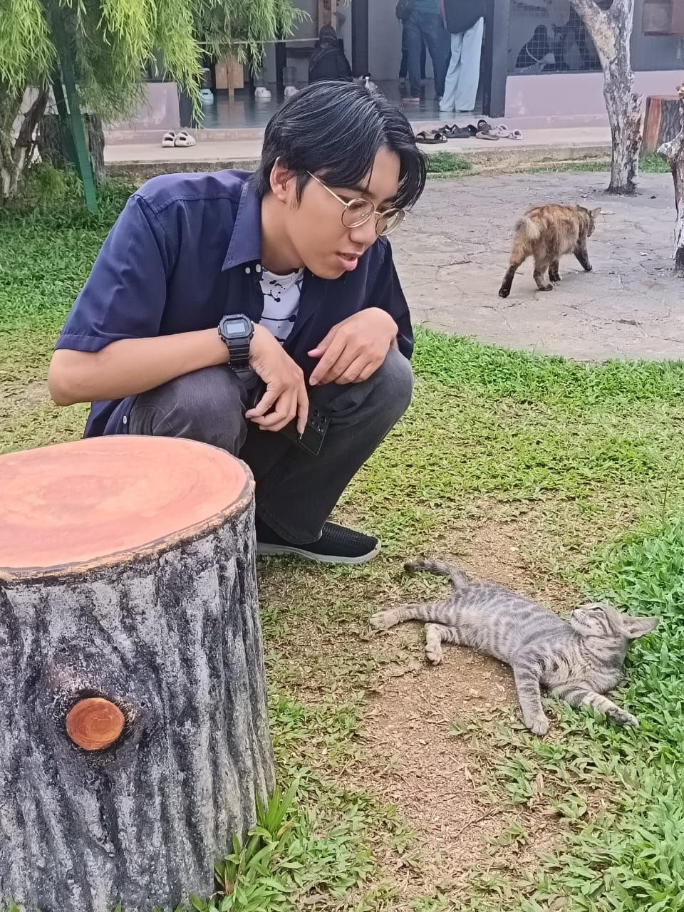
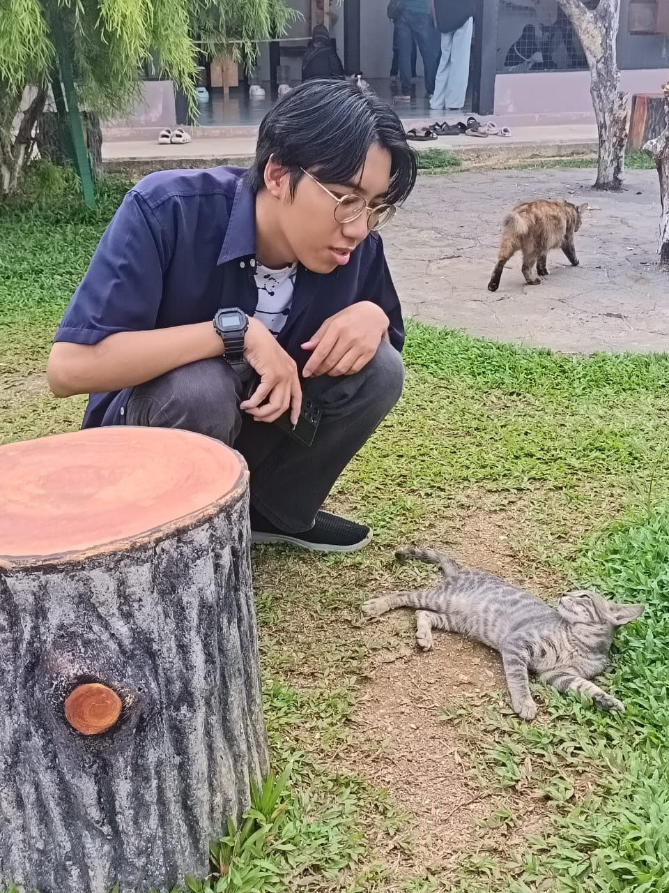
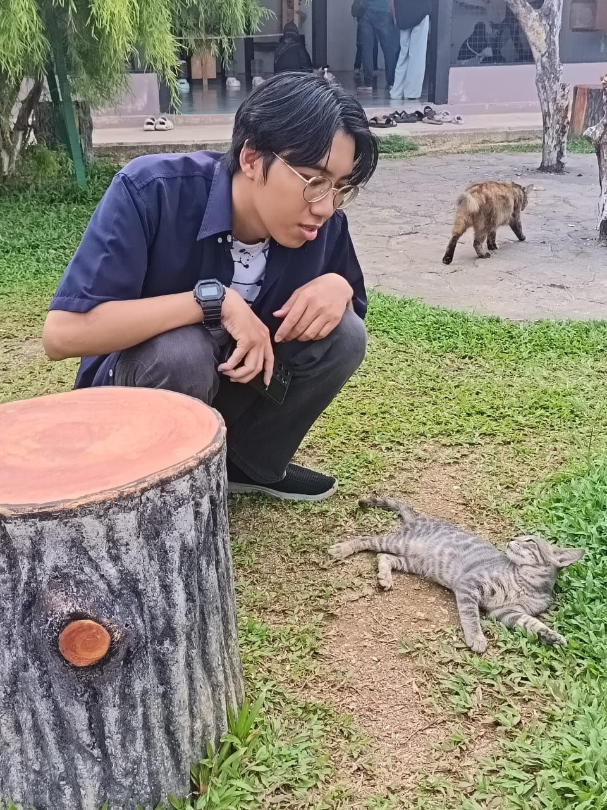
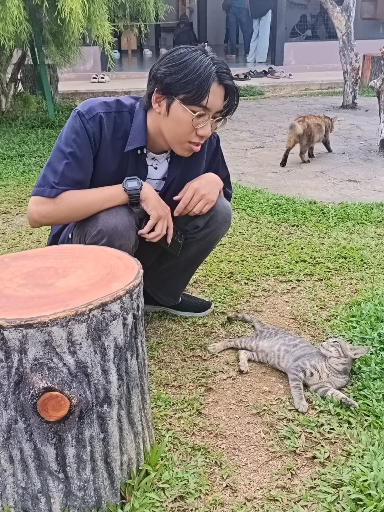

Personal Detail

 


My Biodata
Name: Muhamad Zulhilmi Bin Zamri
Birthday: 24 August, 2005
Age: 19
Gender: Male
Height: 173 cm
Weight: 60 kg
Status: Single
Race: Malay (Father), Malay (Mother)
Occupation: Student

Name: Muhamad Zulhilmi Bin Zamri
Birthday: 24 August, 2005
Age: 19
Gender: Male
Height: 173 cm
Weight: 60 kg
Status: Single
Race: Malay (Father), Malay (Mother)
Occupation: Student
I'm an introvert, so I feel most comfortable and recharged when I have time to myself. I prefer deep, meaningful conversations over small talk, and I usually think things through before I speak. I enjoy observing and listening more than being the center of attention, and I tend to keep a small circle of close, genuine friends. Physically, I'm tall and wear glasses. I don’t really see myself as very handsome, but I know I have a calm presence and a quiet confidence that comes from being sincere and thoughtful.

I come from a loving family of four.. my parents, my sibling, and me. My parents have always been my greatest inspiration. They have guided me with love, shaped my values, and taught me to keep moving forward even when life gets hard. As for my sibling... well, let’s just say we fight like cats and dogs, but deep down, we both know we wouldn’t trade each other for the world.
When I was younger, I never planned on continuing my studies. I wanted to jump into the workforce early to help my family financially. But through their endless support and encouragement, I found myself walking a different path. One paved with books, friendships, and personal growth.
My education began at Kemas Mesra during my kindergarten years from 2011 to 2012. Then I moved on to SRK Selayang Bharu 1 for primary school from 2013 to 2017, where I built my early foundations in learning. I continued my journey at SMK Selayang Bharu from 2018 to 2022, where I truly began discovering who I am. Currently, I’m pursuing a diploma at Universiti Teknologi MARA (UiTM), Kedah campus, from 2023 to 2026 a chapter in life filled with growth, challenges, and unforgettable memories.
Throughout all these phases, my friends have always been like family to me. We’ve shared laughter, struggles, dreams, and late-night talks. They’ve made my days brighter and my journey lighter.
As I look forward, I carry dreams close to my heart. I dream of traveling the world not just to see new places, but to feel the warmth of different cultures and people. I hope to create music that reflects my emotions and stories, and one day release songs that others can relate to. My vision of happiness is simple: a cozy house in a beautiful place, surrounded by a loving family, and a life where I can live freely and making my own choices, without pressure or fear, just peace... and joy in the little things.
This is my journey it shaped by family, inspired by friendship, and driven by dreams.